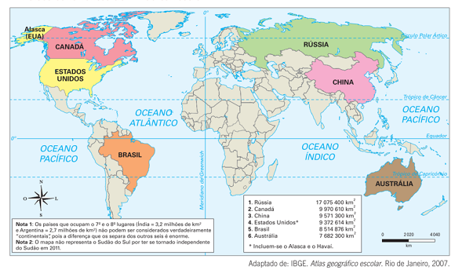
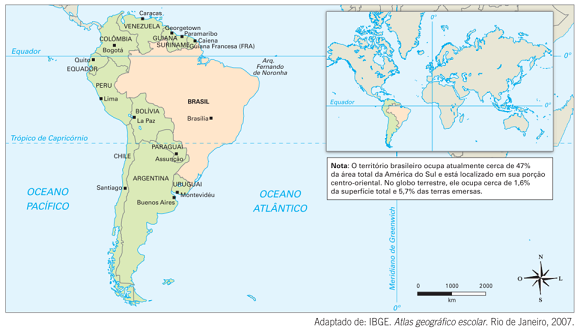
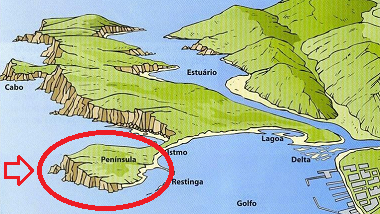
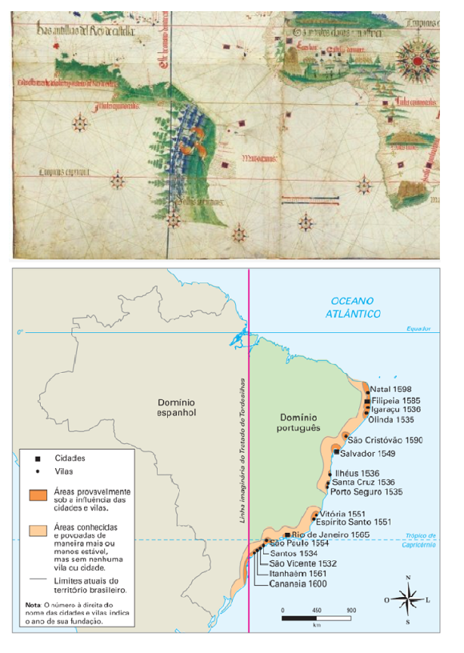
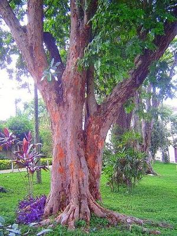
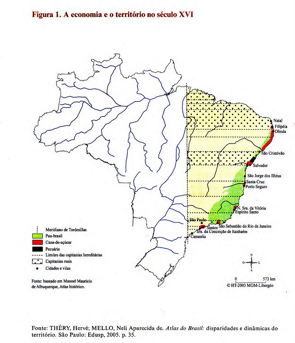
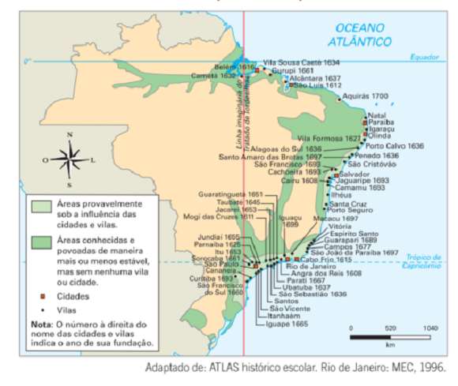
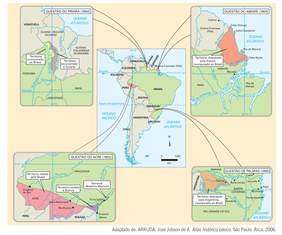
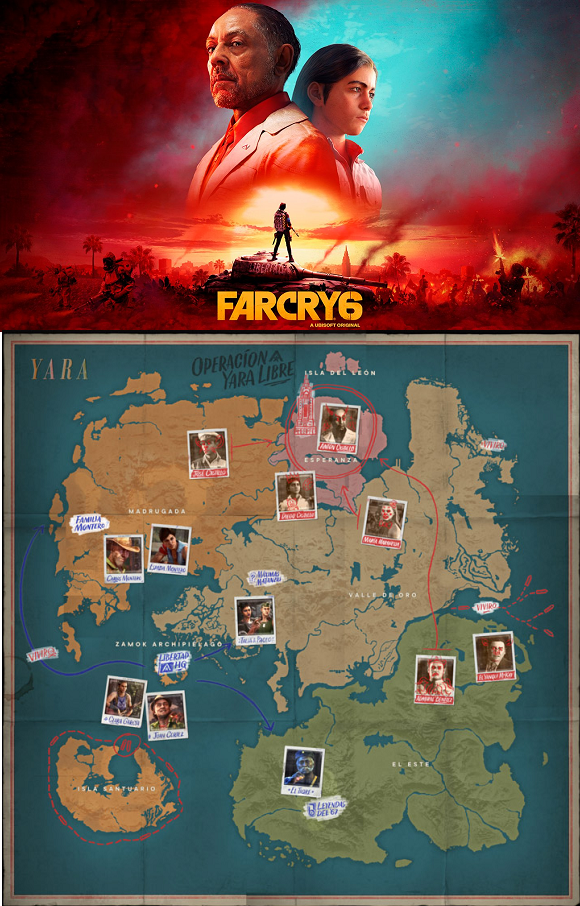

Conteúdo: Capitalismo Comercial; Grandes Navegações; Divisão internacional do trabalho;
Tratado de Tordesilhas; Tratado de Madri; Arquipélago econômico; Pau-Brasil; Cana-de-açúcar; Latifúndio;
Plantation; Centros urbanos; Pecuária; Metais preciosos; Ocupação da Amazônia; Borracha; Café; Fronteiras.
Objetivos: Compreender o processo de formação do território brasileiro através dos eventos
de colonização e ocupação. Identificar os espaços vinculados ao comércio colonial exportador que marcaram as
fronteiras e as desigualdades socioespaciais no período atual.
Digite seu nome
Introdução
O Brasil é um país imenso, praticamente um continente. Ele está no quinto
lugar como um dos países mais extensos do Globo. Para se ter uma ideia dessa dimensão de 8. 514 876 km², com
exceção da Rússia, caberiam todos os países da Europa no território brasileiro.

O Brasil ocupa quase a metade da América do Sul (47%). E a América portuguesa do século XVI possuía
“somente” 2.5 milhões km² aproximadamente, já vamos ver como ocorreu essa expansão com a exploração
econômica, missões dos bandeirantes e da colonização portuguesa.

Fonte: Organizado pelo autor.
Questões para serem respondidas no caderno sobre o tema da aula de hoje:
1. Qual foi o papel do Tratado de Tordesilhas na formação do território brasileiro?
2. Explique por que o Brasil colonial era considerado um "arquipélago econômico" e como isso impactou seu desenvolvimento.
3. Como a exploração do pau-brasil influenciou a ocupação do território brasileiro nos primeiros anos da colonização?
4. Qual foi o impacto do modelo de plantation na organização social e econômica do Brasil colonial?
5. De que maneira a busca por riquezas minerais influenciou a ocupação do interior do Brasil?
Um projeto de Brasil
Para se chegar a atual configuração do território brasileiro foi preciso inúmeros processos complexos nessas
terras tropicais e de grande biodiversidade e do encontro com os habitantes que já viviam aqui: a população
indígena.
Vamos focar nos processos geográficos, isto é, ligado ao espaço geográfico, enquanto os professores de
História explicarão os processos relacionados ao tempo e as ações dos homens.
Quando Pedro Álvares Cabral pisou em solo brasileiro, parte desse território já era de Portugal. Você deve
estar se perguntando: Como assim? Eles ainda não tinham navegado até aqui, como pode ser deles?
Não fisicamente, entretanto mediante os acordos entre as potências da época, Portugal e Espanha, o mundo já
tinha dono, ou seja, o poder sobre o espaço mundial já estava muito bem dividido.
Esses dois países da Península Ibérica oficializaram suas negociações em um Tratado chamado de Tordesilhas,
cidade espanhola onde foi assinado o acordo.
Mas você deve ter outra questão, o que é península mesmo? Península é uma porção de terra quase toda
circundada por água, com exceção de uma estreita faixa que a liga ao continente. Também tem um desenho,
clique aqui.

Agora já sabemos a localização de Portugal e Espanha que assinaram esse acordo em 1494, antes mesmo dos
lusitanos atracarem no atual Estado da Bahia em 22 de Abril de 1500.
Esse tratado definia os limites dos territórios descobertos ou a serem descobertos pelas duas potências do
período da expansão marítima. Ele dividia o mundo através de um meridiano a 370 léguas a Oeste do
arquipélago de Cabo Verde. As terras situadas a Oeste seriam espanholas e as situadas a Leste, portuguesas.

Planisfério de Cantino (1502), mostrando o meridiano de
Tordesilhas. Imagem: Biblioteca Estense (Itália) / Domínio público. IBGE, Atlas Geográfico Escolar, 2007.
Fonte: https://novaescola.org.br/conteudo/11871/.
No mapa acima podemos ver o Planisfério de Cantino de 1502 mostrando o meridiano de Tordesilhas. No segundo
mapa, a área inicial do território brasileiro bem reduzida em comparação com a atual. Os limites abrangiam
desde a ilha de Marajó, ao norte ao litoral catarinense. A região da Amazônia as terras gaúchas, o
Centro-Oeste e outras regiões pertenciam à América espanhola.
Expanda seu conhecimento
Nos séculos XV a XVIII, as metrópoles europeias acumularam capital com a prática de atividades de retirada e
comercialização de produtos primários (agrícolas e extrativistas), empreendida nos territórios conquistados.
Essa prática estava ligada diretamente ao surgimento do(a):
A terra do pau-brasil
Não demorou muito para os portugueses consolidarem o objetivo para essa nova terra recém encontrada: a
exploração de seus recursos naturais e de seu envio para a Europa.
Após a presença física dos portugueses em solo brasileiro, a Coroa portuguesa começou a enviar expedições
para conhecer a paisagem da nova terra prometida e definir melhor seus limites.
Entretanto, nas décadas seguintes o território permaneceu quase abandonado. A presença lusa limitava-se a
algumas feitorias estabelecidas ao longo do litoral, principalmente em enseadas ou baias. Nelas, os
mercadores armazenavam o pau-brasil e outros recursos que extraíam da floresta, com a ajuda dos nativos,
mais tarde embarcados para a metrópole. Outros europeus, principalmente franceses, também visitavam o
litoral, dedicando-se ao contrabando da valiosa madeira.
O Pau-Brasil foi a primeira matéria-prima a ser comercializada no Brasil, utilizada principalmente no
tingimento de tecidos e de pintura, mas não chegou a imprimir modificações substanciais na paisagem. Mesmo
sendo abundante nas matas da faixa litorânea, desde a Paraíba até o Rio de Janeiro, essa exploração não
contribuiu diretamente para o processo de ocupação europeia do Brasil porque, ocorrendo o esgotamento das
reservas em determinada região, a produção era abandonada.

Árvore de Pau-Brasil. Fonte: desconhecido.
Pega esse conceito!
O Brasil era considerado um arquipélago econômico, pois:
O sentido da ocupação do território brasileiro ao longo dos séculos
A forma de ocupação do território brasileiro herdada desde o período da colonização foi e ainda é centrada em
sua fachada litorânea. Esse caráter periférico não é por acaso, mas sim tem estreita relação com as área
agrícolas e o modo como o território foi organizado para atender os objetivos da Metrópole portuguesa.
Não pensem que os portugueses iriam respeitar o Tratado de Tordesilhas para sempre e ficar confinados nos
limites estabelecidos anteriormente. Já foi dito que a ganância humana não tem limites, e foi assim que esse
ditado foi confirmado quando começaram as expedições em busca de mais terras e mais produtos para enviar
para fora. Tiveram que realizar outros acordos como o de Madrid (1750) e o de Santo Ildefonso em (1977) além
de outros para conter o avanço português em terras espanholas.
Com a ocupação na Ásia apresentando sinais de decadência, e agora uma nova terra descoberta, estava tudo
perfeito para que esse episódio se transforma-se em uma metáfora de uma nova terra prometida com um futuro a
construir e conquistar.
O cenário era animador para a expansão comercial europeia e para o crescimento da economia urbana naquele
continente. Quer dizer que a descoberta da América financiou a modernidade na Europa? É uma boa questão para
pensarmos um pouco.
O capitalismo estava surgindo e o feudalismo tinha se esgotado como modo de produção centrado na agricultura.
A moda era a troca de produtos para aumentar o comércio. A Revolução Industrial estava literalmente no forno
e se concretizaria no século XVIII.
Com os crescimento das cidades um dos principais motivos para essa expansão além-mar era a busca por novos
produtos como ouro, prata, açúcar, tabaco, dentre outros. Era preciso enriquecer a metrópole. Mais havia um
problema: a população era esparsa concentrada em pequenos povoadas. O jeito foi organizar um produção com um
produto antes restrito a pequenas produções para a Europa, mas que agora com solos férteis seria possível
produzir em grande quantidade: apresento-lhes o açúcar. E mais tarde o diamante, o algodão, o café e por ai
vai.
Por isso que a distribuição da população ficou concentrada no litoral, pois lá havia os portos, a navegação
de cabotagem, aquela realizada próxima a costa para outras cidades litorâneas, como do norte do Rio de
Janeiro em São João da Barra para Salvador na Bahia ou de Santos para outras localidades no Rio de Janeiro.
Portos também no nordeste exportando produtos para Portugal e não uma produção interna para a população.
Qualquer semelhança com o século XX não é mera coincidência.
Quem comandava tudo isso? Infelizmente não eram os povos originários do Brasil, ou seja, os indígenas.
Não confunda as coisas!
O que o movimento indígena reivindica é que esse termo [índio], que é colonizador, que reproduz um
pejorativo que remete à ideia eurocêntrica de que somos atrasados, de que somos todos iguais, no sentido
de que as diferenças linguísticas e culturais são desconsideradas, seja substituído por como nos
autodenominamos".
Fonte: Índio...(2022).
Tratava-se de uma minoria, isto é, uma elite formada a partir de concessões de terras. Eles se tornavam
proprietários de terras desde que foi implantando o sistema de capitanias hereditárias. O reino de Portugal
de forma violenta, para dizer o mínimo contra os indígenas, loteou o território brasileiro, o repartiu de
forma linear entre 30 a 100 léguas e as repassou aos donatários portugueses que puderam, dentre outas
coisas, nomear autoridades administrativas e juízes nos seus território, receber impostos e muito mais.
(Confira nas aulas de História com mais detalhes). No mapa abaixo é possível ter uma ideia de como eram as
capitanias hereditárias.
O problema era que as capitanias eram extensas demais para gerenciar. A partir disso e seguindo a mesma
lógica, os portugueses começaram a instituir o sistema de sesmarias, que era basicamente a doação de terras
para quem quisesse produzir com o objetivo de não deixar as terras sem cultivo.
Depois de enviar algumas expedições e fundar as primeiras cidades como a vila de São Vicente em 1532, o
terreno estava pronto para a produção da cana-de-açúcar e do início do povoamento.
O povoamento no século XVI
As capitanias hereditárias foram realmente os primeiros latifúndios do Brasil, o que demonstra, desde o
início da colonização, a realidade desigual da distribuição de terras brasileiras, que perdura até os dias
atuais.
Com o sistema de capitanias, a exploração econômica do Brasil tomou-se mais intensa, além da extração e
comercialização do pau-brasil, multiplicaram-se os canaviais, já que o açúcar podia ser comercializado na
Europa com boa margem de lucro. O cultivo desenvolveu-se de acordo com o sistema de plantations
(grandes propriedades monocultoras de produtos destinados à exportação) e dos engenhos que produziam o
açúcar. (O livro Menino de Engenho de José Lins do Rego é muito bom, vale a pena a leitura).
Inicialmente, o cultivo da cana-de-açúcaro Vicente, baixada santista, porém a atividade não
prosperou devido aos solos rasos e pouco férteis da faixa litorânea paulista e aos elevados custos do frete,
pois os portos eram mais distantes da Europa.
Em seguida o cultivo da cana-de-açúcar se deslocou para o Nordeste em virtude das condições naturais
favoráveis como o solo fértil e o clima quente e úmido, com chuvas abundantes distribuídas ao longo do ano.
Veja o mapa abaixo:

As grandes lavouras ocuparam a área de Mata Atlântica, conhecida le como Zona da Mata. Nesse período,
paralelamente, foi utilizada a mão de indígena nos canaviais de forma complementar ao trabalho escravo
realizado pelos africanos que se tornaria um lucrativo comércio dominante nas colônias. Para viabilizar esse
tráfico de escravos, os portugueses estabeleceram possessões na África de onde traziam essas pessoas para
serem vendidas no Brasil, geralmente em condições desumanas no transporte que duravam meses.
Com toda essa exploração da mão de obra foi possível fundar mais cidades, além de São Vicente, a fundação dos
primeiros núcleos urbanos surgiram em Olinda (1537), Salvador (1549), Vitória (1551) e Rio de Janeiro
(1565).
O fracasso do cultivo da cana-de-açúcar em São Vicente gerou o povoamento das áreas do planalto paulista onde
foram fundadas vilas como Santo André da Borda do Campo (1553) e São Paulo de Piratininga (1554). Dessa área
partiram expedições - as bandeiras que utilizavam os rios como pontos de referência e locomoção.
Nas proximidades de São Paulo, o rio Tietê e seus afluentes foram vias naturais de acesso ao interior do
continente. Nas vilas do planalto, as principais atividades económicas foram a agricultura de subsistência e
o apresamento de índios, vendidos como escravos.
Pense e responda!
O Brasil na condição de colônia portuguesa, consolidou-se como área exportadora de matérias-primas e
importadora de bens manufaturados. O trecho trata da(o):
O povoamento no século XVII
É claro que outros povos não ficaram só olhando a exploração de Portugal em sua nova terra. Holandeses também
dominaram o Nordeste no século XVII a partir dos engenhos de açúcar e na criação de gado.
Aliás os rebanhos foram responsáveis pelo avanço ao sertão do território, quer dizer para o interior. No rio
São Francisco a criação era bastante intensa que o apelido do rio era “rio dos currais”.

Com o mapa podemos fazer comparações e verificar a expansão da ocupação do território ao longo do tempo. No
sertão nordestino, vale do São Francisco, zona da mata e todo o litoral com a cana-de-açúcar incentivando o
povoamento, que não era muito concentrado pois a pecuária era extensiva, ou seja, utilizava pouca
mão-de-obra.
O território ganha forma no XVIII
No século XVIII esse processo de ocupação vai conhecer uma mudança impressionante, as bandeiras, o avanço
pelo vale do rio Amazonas e a mineração vão proporcionar um crescimento extraordinário do território
brasileiro.
Vimos que o principal objetivo de Portugal era garantir a exploração de sua nova colônia. Para isso tinha
missões principais de povoamento através da distribuição de terras com as capitanias primeiramente, depois
sesmarias e posse mesmo com o princípio de utis possidetis, ou seja, as terras seriam de quem as
ocupasse efetivamente sem precisar de títulos anteriores. Além das missões secundários de explorações pelo
território com a recompensa de obter metais preciosos como ouro.
Foi então que encontraram esse precioso minério na porção central do Brasil que corresponde hoje aos Estados
de Minas Gerais e Mato Grosso. Isso mudaria e implantaria uma nova organização territorial e administrativa
da colônia.
O abastecimento da área de mineraçãoebiam milhares de pessoas em busca de enriquecimento
resultou um primeiro ensaio de integração econômica. Cresceram cidades e vilas de uma hora para outra como
Vila Rica (atual Ouro Preto), São João del-Rei, Nossa Senhora do Carmo (Mariana), Vila Boa (atual Goiás),
Cuiabá, Cáceres e dezenas de outras.
A mineração tomou-se a mais importante atividade econômica da colônia, o que fez com que a sede de governo
fosse transferida de Salvador para Rio de Janeiro, mais próximo das áreas mineradoras e com um porto pronto
para exportar para Portugal.
Muitos caminhos surgiram para interligar o interior aos portos e facilitar a circulação do gado vindo do Sul
e do Nordeste e dos manufaturados europeus que abasteciam as vilas do ouro.
Nelas artistas de origem humilde, reconhecidos por seu talento, impulsionaram o movimento artístico que
ficara conhecido como Barroco Mineiro.
Nesse período os acordos entre portugueses e espanhóis continuavam a todo vapor. Como estava ocorrendo uma
nova distribuição de terras para quem quisesse explorar, os espanhóis ficaram com a posse definitiva das
Filipinas e receberam a Colônia do Sacramento fundada no atual na região do Prata. Em contrapartida, a Coroa
portuguesa ficou com a Amazônia e com as terras situadas nas regiões Sul e Centro-Oeste.
Mas com um território desse tamanho repleto de riquezas não seria fácil controlar todos os movimentos de
independência. O século XIX seria marcado por diversas revoltas e frentes pioneiras novas.
Enquanto isso na Amazônia...
No Nordeste do século XVII, além do açúcar e da pecuária, destacavam-se como atividade econômicas as
lavouras de algodão e a produção de fumo na área do Recôncavo, nas proximidades de Salvador. O tabaco de
melhor qualidade era encaminhado a Portugal enquanto o restante da produção servia como moeda de troca
na captura, transporte e comércio de escravos africanos.
Na Amazônia, o foco foi a extração das "drogas do sertão" Eram produtos como urucum, cravo, baunilha,
canela, cacau, guaraná, e também folhas e raízes, como a salsaparrilha, dotadas de propriedades
medicinais e utilizadas na culinária. Extraídos ao longo de rio Amazonas e seus afluentes pela população
local, composta de indígenas e mamelucos (mestiços de europeus e nativos), esses produtos eram
comercializados na colônia e também exportados para a Europa. Em sua busca de lucros, os
luso-brasileiros ignoraram a linha de Tordesilhas. Os cursos dos rios foram utilizados como caminhos
naturais para penetrar o interior e fixar núcleos de ocupação. A mesma transgressão ao tratado de
Tordesilhas caracterizou a atuação dos bandeiras paulistas, que realizavam longas expedições ao interior
em busca de ouro, pedras preciosas e, sobretudo, para o apresamento de Índios. As bandeiras investiram
contra as missões jesuíticas estabelecidas em terras paranaenses, gaúchas, paraguaias e argentinas,
integrantes da América espanhola, capturando milhares de nativos. (SANTOS,
2008).
Faça as conexões!
Leia e marque a opção de acordo com tema: "Desempenhou importante papel na ocupação do interior do Brasil,
aproveitando-se o rebrotar das folhas na estação das águas nas caatingas arbustivas mais densas, além dos
brejos e dos trechos de matas. Com a exploração das minas de ouro descobertas mais ao sul, foram necessários
também carne, couro e outros derivados, além de animais para o transporte".
A busca da independência do território
O século XIX foi o período intenso de redefinição do território brasileiro. Primeiro, o pais consolidou suas
fronteiras e promoveu sua independência de Portugal (mas ainda temos muitas dependências por ai). Segundo,
surgiu outro produto que seria o motor da economia brasileira: o café.
O café chegou ao Brasil vindo do continente africano, inicialmente pela região Norte e depois foi parar no
Rio de Janeiro e se instalou de vez no vale do rio Paraíba no Estado de São Paulo.
A exploração da cafeicultura e ainda com a escravidão fizeram emergir inúmeras cidades paulistas como
Araraquara, Limeira Campinas São Carlos Ribeirão Preto, São José do Rio Preto, entre outras localizadas na
depressão Periférica Paulista e no planalto Ocidental. Com clima e solo de terra roxa (solo de cor
vermelho-escura originado da decomposição dos derrames basálticos ocorridos na região) o café encontrou
condições favoráveis para o seu cultivo. Do ponto de vista do equilíbrio ecológico, principalmente em
relação a vegetação de Mata Atlântica no interior e de floresta tropical foi um desastre, uma vez que essas
formações vegetais praticamente desapareceram para dar lugar a nova prática agrícola muito rentável no
comércio mundial.
Com a cafeicultura também as relações de trabalho no Brasil foram alteradas. Enquanto no vale do Paraíba o
braço escravo sobreviveu até a década de 1880, em meio a decadência dos safras, na região de Campinas e
Ribeiro Preto, mais dinâmicas, era utilizada a mão-de-obra livre e assalariada, incentivada pela imigração:
de 1884 a 1903 entraram no pais mais de um 1 745 mil imigrantes europeus.
A cafeicultura paulista sustentou as finanças do Império e, depois da chamada República Ve (1889-1930). Em
1929, ocorreu a grande crise gerada pela quebra da Bolsa de Valores de Nova York, que acarretou a derrubada
no preço das sacas de café. Nesse período, entretanto, o capital acumulado pela cafeicultura já incentivava
a atividade industrial no Brasil, criando uma nova organização do espaço.
Ainda no século XIX, a região Norte conheceu um surto de riqueza associada à exploração de látex na Amazônia.
Da seringueira, extraía-se a matéria-prima para a produto da borracha Essa atividade era desenvolvida por
milhares de trabalhadores em sua maioria migrantes nordestinos que seguiam os mesmos caminhos dos
exploradores das drogas de sertão.
Avançando para Oeste, em busca de novos seringais, eles ocuparam terras bolivianas. Essa invasão acabou
definindo os contornos do país com a aquisição do Acre à Bolívia por 2 milhões de libras esterlinas em 1903.
Olhe para o passado para entender o presente
“Uma unidade de produção caracterizada pela presença da grande propriedade (latifúndio), pela monocultura
(cana-de-açúcar) e pelo trabalho escravo (inicialmente indígena, posteriormente africano), cuja produção se
destinava basicamente ao mercado europeu, do qual ela dependia”. O texto se refere ao sistema de:
A ação diplomática nos séculos XIX e XX
Durante o período imperial e o republicano, foram incorporados ao território brasileiro aproximadamente 1
milhão de km². Eram, em geral, áreas ocupadas por brasileiros, que foram anexadas por meio de acordos e
tratados.
Nesse período, foi decisiva a atuação de José Mana da Silva Paranhos Júnior, barão do Rio Branco Ministro das
Relações Exteriores entre 1902 e 1912. Ele ajudou a consolidar nossas fronteiras por meios pacíficos. As
principais questões fronteiriças do final do século XIX e início do século XX foram as seguintes:
Palmas: área disputada pelo Brasil e pela Argentina, situada no extremo Oeste dos Estados de Santa
Catarina e Paraná. A disputa for resolvida por arbitramento internacional em 1895.
Amapá: área disputada pelo Brasil e pela França (já que a Guiana Francesa até hoje é um Departamento
Ultramarino da França), a qual reivindicava terras além do rio Oiapoque, no extremo norte do país. O
litigio também foi resolvido por arbitragem internacional em 1900.
Pirara: área disputada pelo Brasil e pela Guiana (então colônia do Reino Unido) próximo ao lago Pirara
no Leste do atual estado de Roraima. Levada ao arbitramento internacional a pendência foi resolvida em
1904, sendo desfavorável ao Brasil. O território foi dividido cabendo à Guiana Inglesa a maior parte.
Acre: área ocupada por seringueiros brasileiros; a área nas vizinhanças do rio Acre gerou um confronto
militar e diplomático entre Brasil e Bolívia, na virada do século XIX. Chegaram a ocorrer choques
armados entre os seringueiros e as tropas bolivianas. A crise for superada em 1903 pela assinatura do
tratado de Petrópolis, que levou à compra do Acre.
×
"O Brasil foi, durante muitos séculos, um grande arquipélago, formado por subespaços, que evoluíram, segundo lógicas próprias, ditadas em grande parte por suas relações com o mundo exterior. Havia, sem dúvida, para cada um desses subespaços, polos dinâmicos internos. Estes, porém, tinham entre si escassa relação, não sendo interdependentes". Mílton Santos. A Urbanização brasileira, 1993. Adaptado.

Não existe pergunta boba! A Ciência é feita de perguntas!
P:
Qual a diferença entre a maneira da Geografia e História ensinar sobre o Brasil?
R:
A Geografia e a História, de maneira geral, possuem objetos, olhares diferentes para a realidade. A História
investiga os fatos a partir do Tempo, por isso essa ciência não estuda somente o passado como dizem, mas sim
as manifestações humanas ao longo de um período. A Geografia, por outro lado, enxerga o mundo a partir do
seu espaço geográfico, um conjunto de objetos ligados entre si que permitem ou não as ações humanas. Por
exemplo, para se ter uma educação temos que construir escolas, para realizarmos um esporte deve haver um
ginásio, e assim por diante. O território, outra forma do espaço geográfico, é formado por infraestruturas
físicas e imateriais, redes, estradas, empresas, circulação de informações, dinheiro, instituições etc. A
ideia da Geografia é a de que a maneira pela qual organizamos o espaço irá repercutir no desenvolvimento da
sociedade. O espaço geográfico não é somente uma coisa passiva, ele tem a capacidade de potencializar ou não
as ações dos homens. A História vai estudar essas mesmas ações humanas tendo o tempo como parâmetro e a
Geografia através do espaço geográfico como referência.
P:
Por que é importante estudar o território brasileiro?
R: O estudo do território brasileiro nos permite diversas possibilidades
para entender a realidade. Em primeiro lugar vivemos em um mundo complexo em um período globalizado com
diversas conexões entre os lugares que fazem parte do território e o mundo. A maneira pela qual o Brasil
organizou seu espaço geográfico ao longo dos séculos e como o Brasil de hoje participa da História mundial
requer uma análise muito ampla. Vamos organizar o país, que possui um território com extrema desigualdade
social e territorial, para que todos os brasileiros participem da sociedade? Como o Brasil vai participar
dessa globalização, como vai se integrar ao mundo? Além disso, entender se temos objetos suficientes nos
bairros, como postos de saúde ou equipamentos de lazer, recorça nossa cidadania para exigirmos nossos
direitos. Quando nascemos, só pelo fato de sermos humanos, já é suficiente para adquirirmos diversos
direitos como a vida, o trabalho, a saúde etc. E nada disso está fora do território. Por que alguns bairros
possuem melhores infraestruturas e outros estão há décadas sem saneamento básico? Todas essas questões
envolvem o território e a política, o território e a cidadania, o território e o meio natural no qual
compartilhamos a existência.
P:
Por que o Brasil é subdesenvolvido?
R: A Geografia busca responder essas e outras questões a partir de seu
objeto de estudo: o espaço geográfico. Isso por que o território interfere e muito na vida das pessoas. Um
dos argumentos mais utilizados é de que a colonização deixou marcas profundas em nossa sociedade e em nosso
território. Tudo que vimos, a exploração dos indígenas, o papel da escravidão em nosso passado, a mineração,
o café etc. E atualmente, a maneira pela qual estamos integrados no mundo como vendedores de produtos
primários, como soja, carne, laranja etc. faz com que nosso país tenha índices muitos baixos em relação a
outros países chamados de desenvolvidos. Mas o futuro de um país passa por decisões políticas, territoriais
e técnicas, a combinação dessas esferas pode modificar nossa realidade, o futuro ainda não foi determinado.
Análise do jogo Far Cry 6.

No jogo Far Cry 6, da franquia Ubisoft, uma ilha chamada Yara é comandada por um ditador Antón Castillo.
Após uma revolução e anos de embargo econômico, um grupo guerrilheiro decide tomar o poder com práticas
nacionalistas e militares. A principal fonte econômica da ilha é o Viviro, uma mutação artificial do
tabaco que é um remédio para a cura do câncer.
Nesse cenário de uma alusão à um país latino-americano, o jogador vivido na pele de uma ou um
guerrilheiro deve realizar diversas missões com o intuito de destituir o ditador do poder. Explora
diversas áreas do mapa da ilha, além de possuir ajudantes nas tarefas.
Instruções:
Com base no texto lido e nos seus conhecimentos sobre jogos adquiridos ao longo do tempo discuta com o
seu grupo de 5 estudantes as possibilidades que a formação territorial do Brasil oferece para criarmos
uma fase para um jogo RPG2d conforme orientação do professor em sala de aula, reflita e escreva sobre os
pontos a seguir:
Objetivo principal (o que os seus jogadores devem fazer no jogo?);
História (qual o problema será resolvido?. Deve conter o início, meio e desfecho da história);
Regras (como os jogadores tentarão ganhar o jogo);
Cenário (construção dos objetos presente no game);
Interação entre cenário e NPCs (personagem não jogável);
Escolha um integrante do grupo para escrever os tópicos na lousa;
Índio ou indígena? Entenda a diferença entre os dois termos. Disponível em:
https://g1.globo.com/
educacao/noticia/2022/04/19/
indio-ou-indigena-entenda-a-diferenca-entre-os-dois-termos.ghtml.
Acesso em: 24 jun. 2022.
MARIANO, Maryelle Florêncio (et al.). Geografia do Brasil Londrina: Editora e
Distribuidora Educacional S.A., 2018.
SANTOS, Mílton. O pais distorcido: o Brasil, a globalização a cidadania. São Paulo:
Publifolha, 2002.
SANTOS, Milton.; SILVEIRA, Maria Laura. O Brasil: território e sociedade no início do
século XXI. 4.ed. Rio de Janeiro: Record, 2002.
SANTOS, Patrícia Cardoso dos (et al.) Enciclopédia do Estudante: geografia do Brasil:
aspectos físicos, econômicos e sociais. São Paulo: Moderna, 2008.
VESENTINI, José William. Geografia o mundo em transição. Ensino médio. 2. ed. – São Paulo:
Ática, 2013.